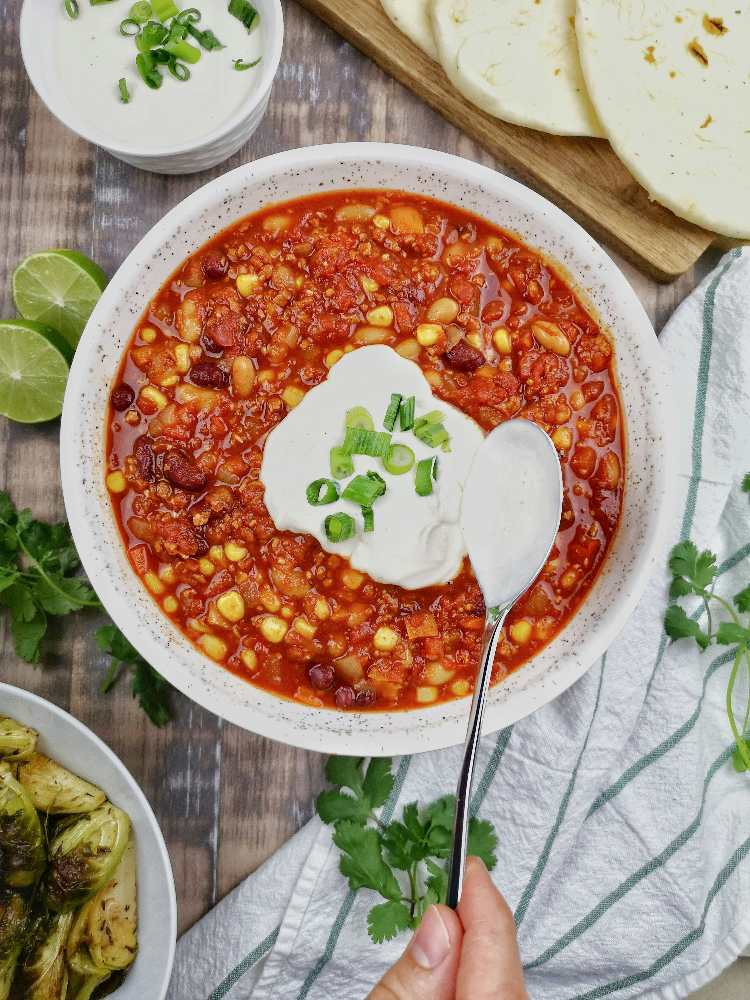

Home
Lentil Soup

Description
This is seriously the best Lentil Soup you’ll ever make!
Dry lentils, fresh veggies, and bold spices give you a wonderfully thick
soup that’s equal parts filling and flavorful. Stovetop, crockpot, and
Instant Pot instructions included.
You won’t find any unnecessary frills or complicated steps here—just
simmer the simple ingredients in a pot on the stove (or in a crockpot or
the Instant Pot) and you’re done. What you’re left with is a
thick and savory soup that’s perfect for dunking
crusty bread.
Ingredients
- 2 tablespoons olive oil
- 1 medium onion, chopped
- 3 cloves garlic, minced
- 2 medium carrots, peeled and chopped
- 2 celery ribs, chopped
- 14- ounce can crushed or diced tomatoes
- 2 cups dry green or brown lentils
- 7 cups vegetable broth
- 1/2 teaspoon ground cumin
- 1/2 teaspoon ground coriander
- 1 teaspoon smoked paprika
- 1 teaspoon salt, or to taste
- 3 cups baby spinach, sliced into ribbons or kale
- 1 lemon, juiced (about 2 tablespoons)
Steps
-
Heat the olive oil in a large pot over medium heat. Add the onions,
garlic, carrots and celery. Cook, stirring frequently for about 4-5
minutes.
-
Now add the can of tomatoes (with juices), lentils, vegetable broth,
cumin, coriander and smoked paprika. Stir to incorporate everything.
-
Bring to a boil, then lower heat to a simmer and cook for about 30
minutes, until the lentils are tender and the soup has thickened. For a
creamier texture, use an immersion blender to blend a few times in the
pot. Alternatively, add 1-2 cups of the soup to a regular blender, blend
until smooth and then return to the pot.
-
Stir in the spinach and lemon juice. It will only take a minute for the
spinach to wilt. Season with salt to taste.